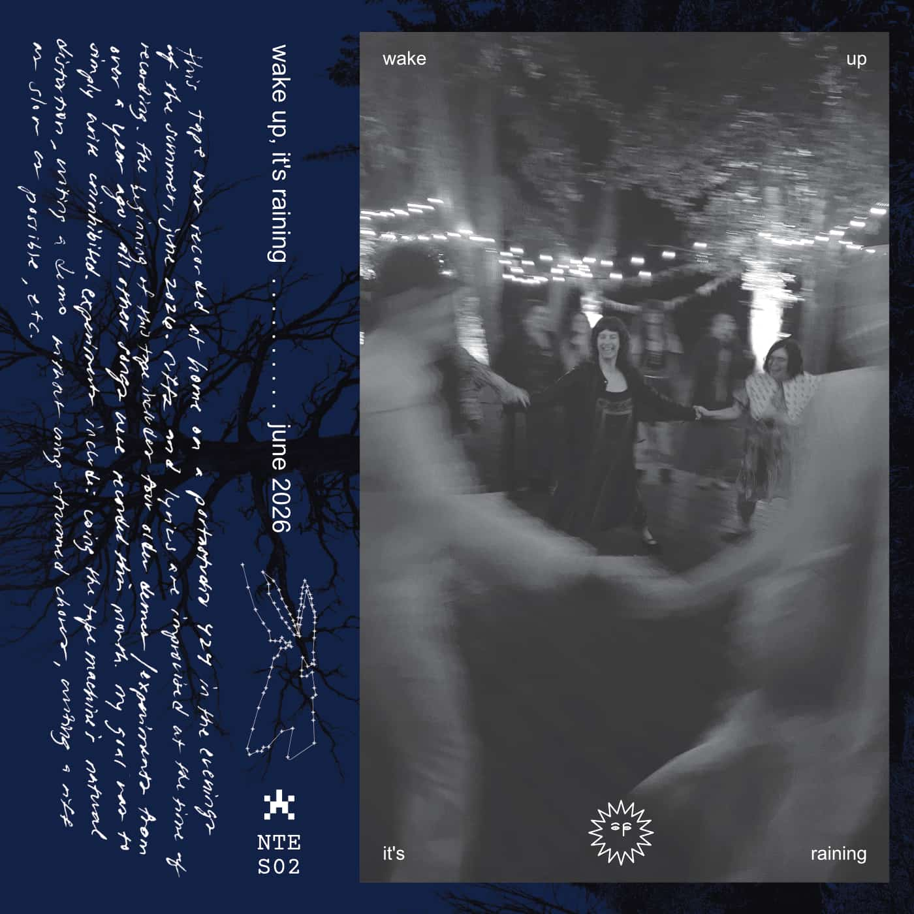

june
// updated: june 30, 2026

this tape was recorded at home on a portastudio 424 in the evenings of the summer, june 2026. riffs and lyrics are improvised at the time of recording. the beginning of this tape includes four older demos / experiments from over a year ago. all other songs were recorded this month.
my goal was to simply write uninhibited.
experiments include: using the tape machine's natural distortion, writing a demo without using strummed chords, writing a riff as slow as possible, etc.
this tape includes 22 tracks:
- reminders demo (2x dbx)
- dauntless (instrumental)
- nylon overblown (instrumental)
- peace (instrumental)
- venison
- gauze & clothes
- gauze & clothes (2x)
- 5/4 (instrumental)
- tape distortion I (instrumental)
- crawl (instrumental)
- fold over memories
- all there is
- all there is (2x)
- knife on the floor (instrumental)
- knife on the floor (w vocals)
- tape distortion II (instrumental)
- nicholas (instrumental)
- skin for you
- skin for you (2x)
- tape distortion III (instrumental)
- giants of the sawtooth (instrumental)
- backpedal (instrumental)
feel free to download these. you can also find them on bandcamp.
~~~~~~~~~~~~~~~~~~~~~~~~~~~~~~~~~~~~~~~~
1. reminders demo (2x dbx)
When I first started this tape I had not yet finished my song reminders. At the time, I thought that maybe if I ran my whole mix from Logic through the tape machine, that it might add some magic glue to the song and open up some new ideas. It didn't do that. Instead, I did learn that if you play back a song at a different speed, it can give you new perspective. Playing the demo back at 2x made me realize that the melody I had was actually something worth keeping and at double speed, the song is, dare I say, fun to listen to.
2. dauntless (instrumental)
3. nylon overblown (instrumental)
4. peace (instrumental)
5. venison
This is the first demo from june. I quite like the lyrics that came out of me in the moment:
red, red venison
hanging from lessons
six, six, six vision
through my throat
acid tongue, acid tongue
6. gauze & clothes
7. gauze & clothes (2x)
8. 5/4 (instrumental)
9. tape distortion I (instrumental)
10. crawl (instrumental)
11. fold over memories
12. all there is
13. all there is (2x)
14. knife on the floor (instrumental)
15. knife on the floor (w vocals)
16. tape distortion II (instrumental)
17. nicholas (instrumental)
18. skin for you
19. skin for you (2x)
20. tape distortion III (instrumental)
21. giants of the sawtooth (instrumental)
22. backpedal (instrumental)